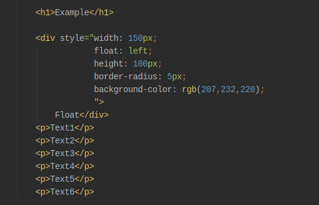

So let's think about how the float works — the element with the float set on it (the <div> element in this case) is taken out of the normal layout flow of the document and stuck to the left-hand side of its parent container (<body>, in this case). Any content that comes below the floated element in the normal layout flow will now wrap around it, filling up the space to the right-hand side of it as far up as the top of the floated element
Example
Float
Text1
Text2
Text3
Text4
Text5
Text6